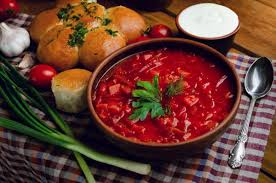
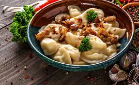
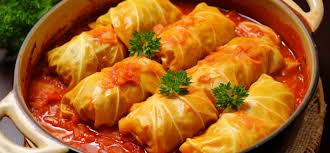
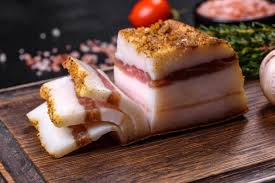
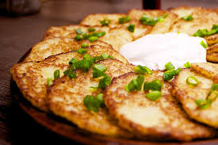
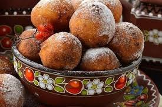

Борщ – це один з найвідоміших українських супів, що готується з буряка, капусти, картоплі, моркви, цибулі та м'яса (часто свинина). Його подають з ложкою сметани та часниковими пампушками.
Вареники – це варені тістяні вироби з різними начинками: картопля, капуста, гриби, сир, вишні. Їх подають зі сметаною або маслом.
Голубці – це страви з м'ясного фаршу, змішаного з рисом або іншими крупами, загорнуті у листя капусти та запечені в соусі з томатів або сметани.
 ДогориСало – це солоне або копчене свиняче сало, яке часто подають з хлібом та часником. Це традиційна українська закуска.
 ДогориДеруни – це картопляні млинці, обсмажені на сковороді, які подають зі сметаною. Їх можна готувати як з простим тістом, так і з додаванням різних начинок, наприклад, м'яса чи грибів.
Пампушки – це невеликі дріжджові булочки, які можуть бути солодкими або солоними. Солодкі пампушки часто готують на свята.
 Догори